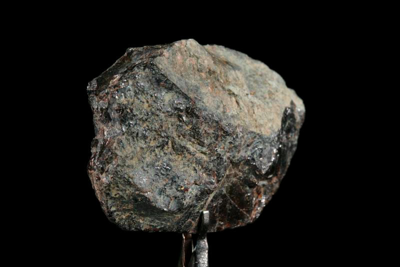

Нептуний
Непту́ний (химический символ — Np, от лат. Neptunium) — химический элемент 3-й группы (по устаревшей классификации — побочной подгруппы третьей группы, IIIB) седьмого периода периодической системы химических элементов Д. И. Менделеева, с атомным номером 93. Относится к семейству актиноидов. Входит в радиоактивный ряд нептуния.Простое вещество нептуний — это первый радиоактивный трансурановый металл серебристо-белого цвета.
До принятия теории расщепления атомного ядра, которая обосновала существование синтезированного позднее реального такого элемента, трижды были сделаны оказавшиеся ошибочными объявления о независимых открытиях элемента 93: «аусоний» (Ausonium) в Италии (Энрико Ферми), «богемий» (Bohemium) в Чехословакии в 1934 и «секваний» (Sequanium) в Румынии, Х. Хулубей в 1939 году.Нептуний впервые был получен искусственно Э. М. Макмилланом и Ф. Х. Абельсоном в 1940 году при бомбардировке ядра урана нейтронами в циклотроне в Беркли.

Нептуний извлекают из продуктов длительного облучения урана в ядерных реакторах как побочный продукт при получении плутония. Мировое производство нептуния достигает нескольких сотен килограммов в год. Изотоп 237Np применяют в качестве стартового материала для получения 238Pu. Нептуний и его соединения высокотоксичны.